IKEDA（イケダ）
FIDELITY-RESEARCH（フィデリティ・リサーチ）で活躍していた池田 勇氏が立ち上げたブランド。カンチレバーを廃したダイレクトカップリング方式のMC型カートリッジで知られる。
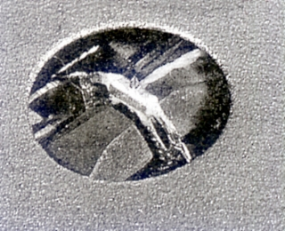
(Ikeda 9REXのスタイラス ダンパーに直接針先がマウントされている）�T.カートリッジ
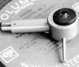
(Ikeda 9)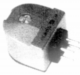
(Ikeda 9EMP)Ikeda 9EM Ikeda9EMP Ikeda 9EMPL
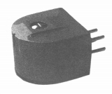
Ikeda 9C Ikeda 9C�U Ikeda 9C�V Ikeda 9C�W Ikeda 9CV
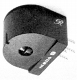
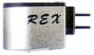
(Ikeda 9REX)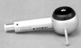
(Ikeda 9supuremo)
�U.昇圧トランス
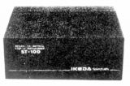
(ST-100 Type10)
�V.アーム
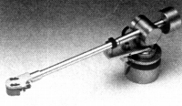
(IT-245)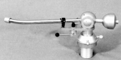
�W.その他
カートリッジの形状に合わせたシェルがあった。
IS-1
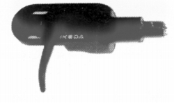
■価格 11,000円
■重量 18.5g
■備考 OFCリッツ線(0.1�o径×24本）リード付き
オーバハング調整（10�o）、左右傾き角度調整可
2本ロックピン採用、ゴールド、ブラック仕上げあり
その他に「イケダ 9シリーズ」専用のIS-2というシェル(11,000円 スペックは同様？）があったようだ。